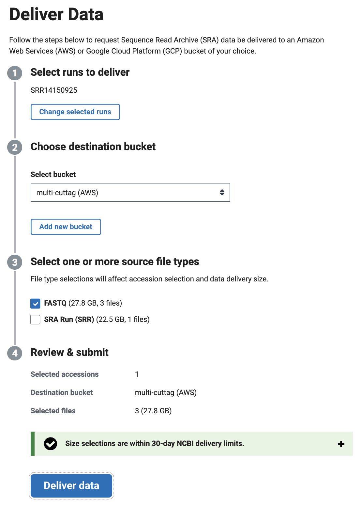
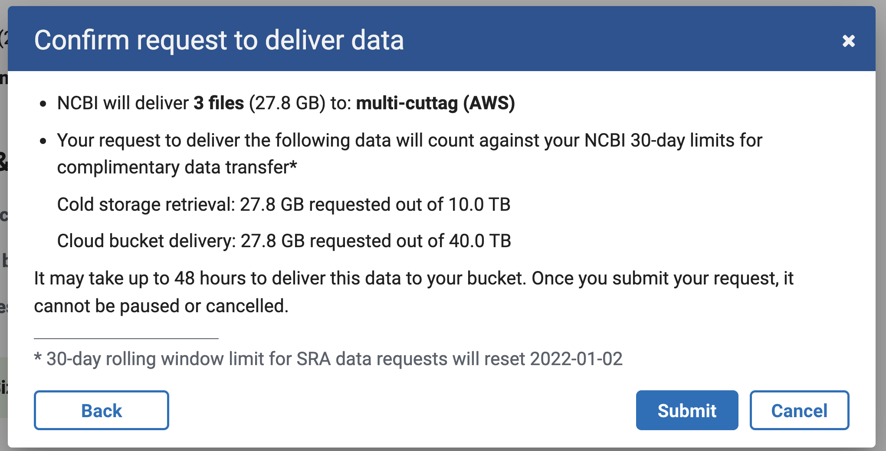
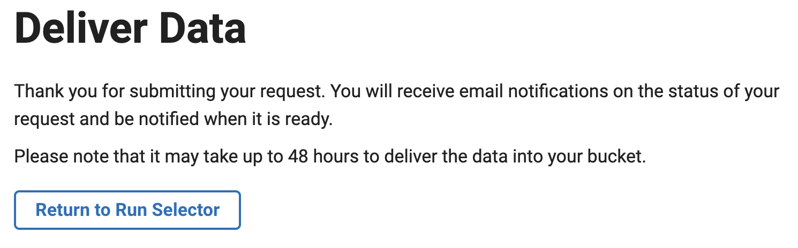
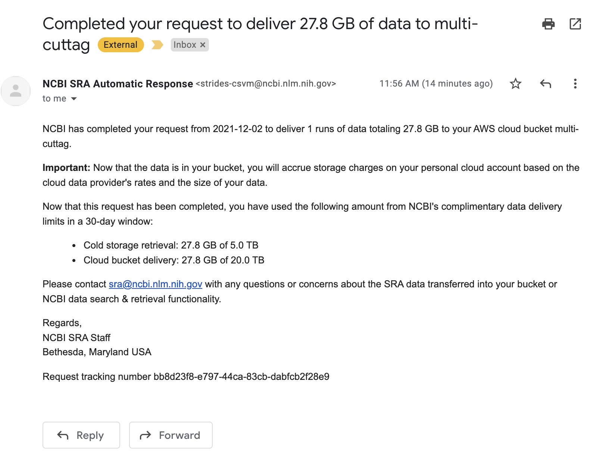
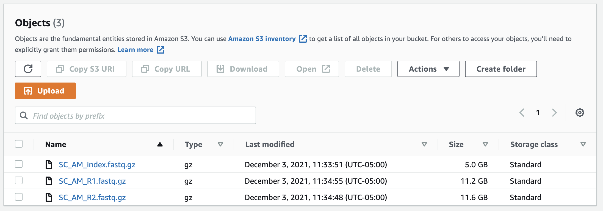

Retrieving SRA data from AWS Glacier storage
The SRA now hosts the user-submitted files for download alongside the “SRA” version. This is useful because the SRA version strips some information like original read names and the index read, which are commonly used to store cell barcode information for single-cell data.
However, the user-submitted files are not quite as easy to access as the SRA files. They are stored on GCP and AWS. Transfer of the files to other cloud storage (eg, to your own S3 bucket) is free, but users pay the cost of egress if you want to use local compute resources. Many datasets are also stored in “cold storage,” meaning they are archived in a way that is not immediately accessible.
It took me a while to work out how to actually retrieve SRA data from AWS Glacier storage, so I will document here the steps required. In this example I wanted to access the raw data for the recent multi-CUT&Tag paper.
These are the most useful NBCI pages on the topic:
- https://www.ncbi.nlm.nih.gov/sra/docs/sra-aws-download/
- https://www.ncbi.nlm.nih.gov/sra/docs/data-delivery/
Step 1: Create an AWS S3 bucket to receive the data
The way data retrieval from glacier storage works is you request that NCBI copies the data into an S3 bucket that you own. You will need to create an AWS account and create an S3 bucket to hold the data. I recommend choosing us-east-1 as the region for the bucket, since that’s where most (all?) of the SRA data is held (although there is no user cost for transfer across regions). There are many tutorials already showing how to do this, and it is very straightforward, so I won’t get into it here. Be aware that you will be charged by Amazon for data stored in this bucket.
Step 2: Request data retrieval through NCBI
You next need to log into MyNCBI and go to the the cloud delivery site. Here you can follow the steps to choose the SRA runs to include in the data delivery. At this stage you will be provided with a bucket policy to add to your S3 bucket that will allow NCBI to deposit data into your bucket. You just need to copy this into the S3 bucket policy settings.

You should see a message like telling you how much data is being retrieved:

And then a confirmation:

Step 3: Download data from your S3 bucket
And you should get an email telling you that the data has been delivered 1 or 2 days after submitting the request:

Interestingly, the data transfer limits cited in the email are half that which was originally cited on the NCBI website.
Once you see this email you can check your S3 bucket using the command line tools or my logging onto the AWS console, and you should see the data sitting in your S3 bucket:

You can then download the data out of your own bucket or create an EC2 instance to compute directly on the data without moving it out of AWS and incurring the data egress charges.